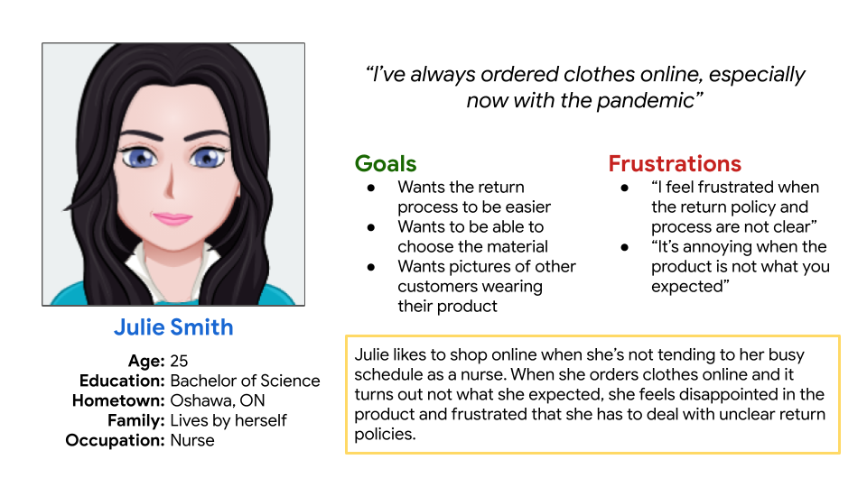
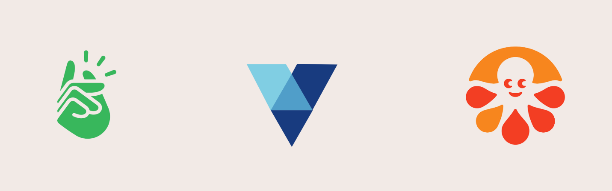
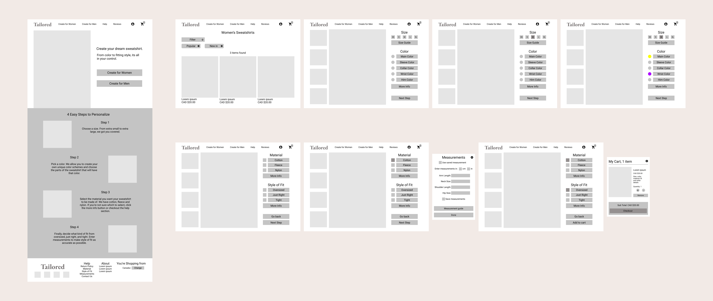

Created an e-commerce website focused on selling personalized sweatshirts.
Project Name
Tailored
Duration
8 weeks
Role
User Experience and User Interface Designer
Tools Used
Figma, Google Workspace
Empathize
Interviewed 5 participants and surveyed 10 participants to figure out user needs. The data was used to create
personas, user stories, and user journey maps.
Julie Smith Persona
Julie enjoys shopping online due to her busy schedule as a nurse. She feels frustrated when products don't align with her expectations.
She enjoys the pictures that other customers post on the website after purchasing.

Julie Smith Journey Map
Created a journey map from the perspective of Julie to anticipate her needs, create a personalized experience and to visualize her emotions
during the user flow of purchasing a sweatshirt.
Defining the problem
It is either difficult or impossible to figure out if the clothes will fit the way the user wants or how it will feel against their skin.
The current methods to make sure online shoppers receive what they expect are small descriptive texts that state the material
and/or the size the model was wearing. Users need a personalized method of making sure they receive what is expected and to their liking.
Ideate
Competitive Audit
The audit was conducted on three competitors based on 4 factors; products offered, target audience, unique value proposition,
and personalization process. The main findings revealed that many platforms that offer personalization are directed
towards appealing to other businesses rather than individual consumers.

Wireframes
Visualized the personalization process and overall brand identity through wireframes.

Prototype
Converted the wireframes into mockups, then turned the mockups into hi-fi prototypes for a usability study.
Test
Conducted a usability study to figure out if the personalization process was intuitive, if the process increased the
likelihood of users liking the product, and if there were any difficulty or confusion while using Tailored. The key
performance indicators for the study were time on task, conversion rates, user error rates, and system usability scale.
Iterate
After the usability study, main changes included:
• a less cluttered personalization process to decrease time on task and increase conversion rates.
• call to action buttons for providing information during the personalization process to decrease user error rates.
• a different colour scheme to portray an attractive and luxurious brand identity.
Design System
Made a design system that included 6 component sets with variants and interactions.
Next Steps
• Create a flow for simplifying the return process.
• More testing to find areas for improvement.
What I Learned
• Less is more in the context of fitting too much content in one space can significantly reduce the appeal of your design, as well as the usability.
• It’s easy to get diverted from the initial problem so always keep the bigger picture in mind when making decisions.